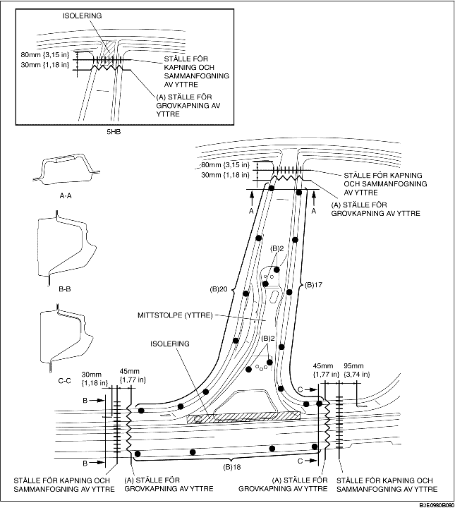
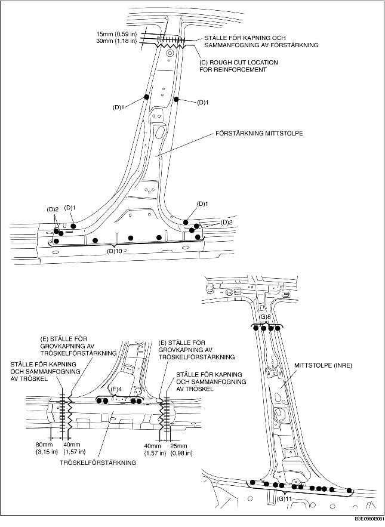

1. Grovkapa området (A), borra de 59 punkter som markeras med (B) och ta sedan bort den yttre mittstolpen.
2. Grovkapa området (C), borra de 18 punkter som markeras med (D) och ta sedan bort den yttre mittstolpens förstärkning.
3. Grovkapa området (E), borra de 4 punkter som markeras med (F) och ta sedan bort tröskelförstärkningen.
4. Borra de 19 punkter som markeras med (G) och ta bort den inre mittstolpen.

